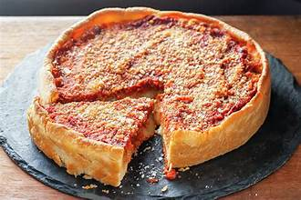

Deepdish Pizza

Description
Recipe for Deepdish Chicago Style Pizza.
Ingredients
- 2 ¼ teaspoons active dry yeast
- 1 ½ teaspoons white sugar
- 1 ⅛ cups warm water - 110 to 115 degrees F (43 to 45 degrees C)
- 7 cups of ice-cold water
- 3 cups all-purpose flour
- ½ cup corn oil
- 1 ½ teaspoons kosher salt
- butter as neede, for greasing
Steps
- Dissolve yeast and sugar in warm water in a bowl. Let stand until yeast softens and
begins to form a creamy foam, 5 to 10 minutes.
- Combine yeast mixture, flour, corn oil, and kosher salt in a large stand mixer fitted
with the dough hook; knead until dough holds together but is still slightly sticky,
about 2 minutes.
- Form dough into a ball and transfer to a buttered bowl. Turn to coat dough with butter,
then cover the bowl with a towel and let rise in a warm place until doubled in volume,
about 6 hours.
- Punch down dough and let rest for 10 to 15 minutes. Press dough into a 10-inch deep-dish
pizza pan and follow your pizza recipe.
- Add cheese, toppings, and tomatoes that you've flavored with garlic, basil, oregano,
etc. Bake the pizza in an oven preheated to 450 degrees F (230 degrees C) for about
30 minutes, depending on your oven. You can prebake the crust for 10-15 minutes before
adding toppings if desired.